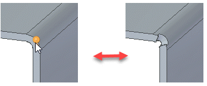
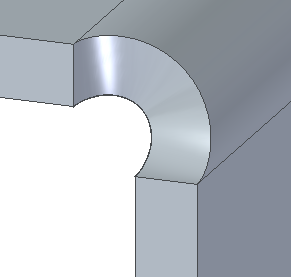
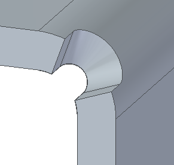

Bend Bulge Relief command
Use the Bend Bulge Relief command  to apply relief to the ends of bends where bulging might be an issue.
to apply relief to the ends of bends where bulging might be an issue.

You can apply:
- Circular relief
-

- U-shaped relief
-

- V-shape relief
-

This video explains when to use the Bend Bulge Relief command and other fundamental concepts.
How do I
Insert a bendEdit a bend radius
Apply relief to a bend bulge
Unbend a sheet metal part
Rebend a sheet metal part
Look up more details
Bend commandBend command bar
Bend Options dialog box
Bend command bar
Bend Options dialog box (editing bend radius)
Bend Bulge Relief command bar
Bulge Relief Options dialog box
Unbend command
Unbend command bar
Rebend command bar
Rebend command